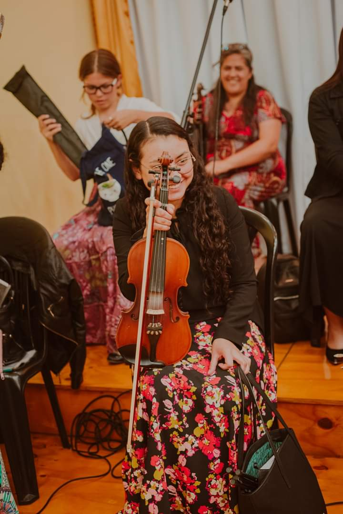

VIVI ZARACHO
VIVI ZARACHO
Hija de Don Satur. Proxima a casarse. Famosa por hacer el mejor pure
de la Republica Argentina.
Cuando no come se pone de mal humor, farmaceutica,
amiga del Pity y la Tota Santillan(preso por causa de maltrato femenino).
Pollera,
si nos juntamos un domingo pero se le presenta una cita, nos deja, pero despues
nos recompenza con pure.
Conocida por jamas habilitar la pelopincho,
ex-modelo, the best Pure. Si le traen mal un pedido, es capaz de tirotear al mesero acompañando la frase "que le cuesta a la gente hacer bien su trabajo?"
AMBAR MEDINA
Alias "La Mami". Reina de las polleras, cuando te preguntes donde esta Ambar,
esta con el novio. De boquita. CEO de Modestia y mamá de Chloe, la mejor
perra, como Ambar. Tiene
los hermanos mas lindos del mundo (Gabi <3).
Hace el brownie mas rico del universo y tiene las patas chuecas.Terrible
minita. Anda de buen humor siempre, re goma. Envidiada.